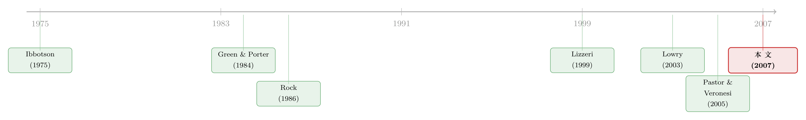

新股的「冷热」，其实是投行在替你算的一笔账
本文读的是 He (2007, Review of Financial Studies)：把 IPO 市场写成一个投行、企业与散户之间的重复认证博弈，证明「高发行量」与「高首日回报」并不是被外生的好行情同时点燃的，而是投行在「冷热交替」的惩罚机制下，被迫做信息生产的内生产物——同一只手，既解释了热市场的火爆，也解释了热市场里更夸张的「打折」。
1 一个被讲了五十年、却没讲圆的故事
先抛一个老问题。
新股市场有「热」有「冷」，这是写进每本公司金融教科书的常识。热市场（hot market）里，新股扎堆上市、发行量奇高，而且首日回报（first-day return，即所谓的「抑价」underpricing）也大得离谱；冷市场（cold market）里，发行寥寥，抑价也温吞。Ibbotson and Jaffe (1975)、Ritter (1984) 早就把这两个相关关系摆在了桌面上。
问题在于，常识归常识，机制却一直没讲圆。
最自然的猜想是：热市场只是好行情的影子。经济好、二级市场估值高、企业有融资需求，于是大家一窝蜂去上市——发行量自然就高。可这个故事经不起推敲。Lowry (2003) 发现，IPO 发行量的波动远远超过企业资本支出的波动；也就是说，企业「要不要钱」根本解释不了「为什么这个季度排队上市的有几十家、下个季度只有三五家」。Helwege and Liang (2004) 又补了一刀：热市场里的行业扎堆现象，在冷市场里其实也有，而且 IPO 周期的频率比技术革新的频率高得多——所以「技术浪潮把企业冲上市」这个解释也站不住。
退一步，市场择时（market timing）派的人说：是企业家在等二级市场估值高的时候，行使他们「把公司搬上市」的实物期权（Pastor and Veronesi, 2005）。这个故事讲得通发行量，却对抑价束手无策。
而抑价才是真正让人挠头的那一半。Loughran and Ritter (2004) 早就问过：凭什么市场越热，发行人越愿意「在桌子上多留钱」（leave money on the table）？按市场择时的逻辑，行情好的时候企业应该卖得更贵、留的钱更少才对。可现实恰恰相反——热市场里，企业一边排着队上市，一边把首日就能涨上去的那块肉，大方地让给了打新的投资者。
于是，一个干净的理论必须同时生出两样东西：发行量的波动，和首日回报的波动。这正是 He (2007) 要做的事。而它给出的答案，几乎是反直觉的——冷热不是行情给的，是投行和散户在一场重复博弈里，自己「磨」出来的。
2 把 IPO 市场拆成三个人
要讲清这套机制，先得看清楚舞台上站着谁。
模型设在一个无限期经济里，有一家「永生」的投资银行（I-Bank），和一个连续统的、同样永生的小投资者。每一期，来一家新公司（企业家），只活一期。公司要上一个项目，期初需要资源（标准化为 1），期末项目清算价值为 v，只有两种可能：v_H 和 v_L，且 v_H > 1 > v_L——好项目能赚钱，坏项目会亏钱。
关键的信息结构是这样的：公司自己不知道 v 到底是好是坏，但它知道 v 取高值的概率 θ ∈ [0,1]。这个 θ 就是公司的「类型」（type），是私人信息，外人看不见，只知道它服从一个公开的分布 g(θ)。
投行能干什么？它可以花一笔成本 c 去「体检」（inspection），拿到一个关于 v 的信号 s。这个信号有个不对称的精度：
$$ \text{If } v=v_H,\ s=\begin{cases} s_H & \text{with prob } 1\\ s_L & \text{with prob } 0\end{cases} \qquad \text{If } v=v_L,\ s=\begin{cases} s_L & \text{with prob } \lambda>0\\ s_H & \text{with prob } 1-\lambda\end{cases} $$
翻译成人话：真正的好项目，投行一定能看出好；但坏项目，投行只有 λ 的概率能识破，还有 1-λ 的概率会把它误判成「好」。如果投行干脆不体检，那它对谁都只能给出「好」信号——等于什么都没看。最要命的一点是：投资者看不见投行到底体检了没有。这是整篇文章道德风险的源头。
时间线很简单：投行先贴出承销费 φ；公司看到 φ 后，决定是否花固定成本 κ 去上市；投行决定要不要花 c 去体检、要不要批准这家公司、并贴出发行价 p_0；投资者看到 {φ, p_0} 后决定买不买；股票随后在二级市场以 p_1 成交；最后真实价值 v 兑现。
如果投行确实花了 c 体检、并且只批准拿到好信号的公司，那么一个类型为 θ 的公司被批准的概率是：
$$ q(\theta)=\theta+(1-\theta)(1-\lambda) $$
而站在投资者的角度，一家被批准上市的公司、它真是好公司的条件概率是：
$$ \theta^a=\frac{\theta}{q(\theta)}=\frac{\theta}{\theta+(1-\theta)(1-\lambda)} $$
体检之所以「有用」，正是因为它把那些 θ 高、却不幸抽到坏签的公司里的一部分坏蛋筛掉了，于是 θ^a > θ——被批准的池子，质量比原始池子更好。λ=0 就退化成「不体检直接批」的情形。
3 真正关键的一步：发行价不是估值，是一把筛子
接着，一个自然的问题是：散户凭什么愿意打新？
He 的处理很巧妙。由于投资者是分散的连续统，他们会协调在一个可接受的「发行价—承销费」组合 {φ*, p_0*} 上——只在看到这个组合时才买，看到任何别的组合都拒绝买。文章把这个协调焦点（focal point）称作「投资者情绪」（investor sentiment）。注意，这里的「情绪」不是行为金融里那种非理性的乐观，而是一群理性散户在博弈里选出来的纪律：用「拒买」这把武器，逼着投行老老实实定价、老老实实生产信息。
投资者打新的收益可以写成：
$$ \pi_I=\frac{1+\varphi}{p_0}\,(p_1-p_0) $$
这里 (1+φ)/p_0 是 IPO 卖给公众的股份比例（因为要凑够 1+φ 的总募资来支付承销费），(p_1 - p_0) 就是抑价。散户的利润，全部来自抑价。这就立刻说清楚了一件事：抑价（p_1 > p_0）不是市场犯傻，而是 IPO 能成交的必要条件——没有这块折扣，分散的散户根本没有动力去买。
那企业家呢？一个类型 θ 的公司若选择不被体检直接上市，它的期望收益是：
这个式子里藏着全文最关键的洞察。π_F(θ) 关于 θ 单调递增，于是「愿意上市」的公司一定是 θ 高于某个临界值 θ̄ 的那一批——可行集（feasible set）必然是 [θ̄, 1] 的形状。
但真正反直觉的，是 p_0 的角色。发行价 p_0 在这个模型里根本不反映公司的真实价值。它高一点，留给企业家的份额就多一点，于是更多 θ 较低的公司也愿意挤进来上市；它低一点，门槛就抬高，只有质量更好的公司才上得起。换句话说——
发行价 p_0 不是估值，是一把筛子（screening device）。真正反映基本面的是二级市场价格 p_1。IPO 价与二级市场价的「解耦」（decoupling），是整个模型的支点。同样地，承销费 φ 也是一把筛子，更是一笔付给投行、用来诱导它去做信息生产的「声誉溢价」。
这一步一旦想通，著名的「7% 之谜」（Chen and Ritter, 2000；Hansen, 2001——为什么美国 IPO 承销费如此整齐地卡在 7%）在这个框架里就不再是「投行合谋收高价」，而成了 IPO 市场为了诱导信息生产、所必须支付的一种效率成本。（关于这块 7% 的固定费率到底如何改写新股价格，可参见《7% 这把「固定的尺子」，竟能改写新股的价格》；关于承销方式的「贵」为何反而胜出，也可对照《为什么「贵」的承销方式反而赢了？》。）
4 单期里做不到的事，重复博弈替你做到
然后，问题就卡在了一个地方。
在单期博弈里，He 证明了一个让人沮丧的结论：投行永远不会体检。理由很直白——投资者看不见体检，那投行花 c 去体检纯属白烧钱，理性的做法是收了钱直接批。这就是经典的道德风险。于是单期均衡里只能实现「不体检」的次优结果，对应一个临界值 θ_0*。
可如果体检成本 c 足够低，社会其实应该让投行去体检。把两种情形的社会福利写出来对比。不体检时：
$$ W_0=\int_{\bar\theta}^{1}\big[\theta v_H+(1-\theta)v_L-1-\kappa\big]\,g(\theta)\,d\theta $$
体检时：
$$ W_1=\int_{\bar\theta}^{1}\big[\theta(v_H-1)+(1-\theta)(1-\lambda)(v_L-1)-c-\kappa\big]\,g(\theta)\,d\theta $$
在 v_H > 1+κ+c 的假设下，最优福利由两个临界值决定：
$$ \theta_1^*=\frac{c+\kappa+(1-\lambda)(1-v_L)}{(v_H-1)+(1-\lambda)(1-v_L)}, \qquad \theta_0^*=\frac{1+\kappa-v_L}{v_H-v_L} $$
文章假定 c 足够小时 W_1^* > W_0^*——也就是说，让投行体检、把更多坏公司筛掉，社会更划算。可单期博弈达不到这个最优。
于是，真正关键的一步出现了：把博弈重复起来。
在重复博弈里，散户虽然仍看不见投行体检与否，但他们能看见结果——已上市公司的真实价值陆续兑现。这就给了散户一个虽不完美、却足够用的监督工具。文章用的是 Perfect Public Equilibrium（PPE，完美公共均衡）这个概念，并证明了一个核心引理：
Lemma 2：不存在「投行每期都体检」的 PPE。 直觉是：要诱导投行体检，就必须在坏结果出现时惩罚它。但如果坏结果接连发生、把投行的收益压到下限，那么为了制造足够的「未来收益落差」来维持激励，当下的收益就得被压到更低——这在数学上是不可能的。
既然「每期都体检」做不到，那么唯一可行的，就是有些期体检、有些期不体检。而怎么在不可观测体检的情况下维持这个时断时续的激励？答案是 Green and Porter (1984) 那套经典的触发策略（trigger strategy）。
5 于是反转出现：冷市场是一种「惩罚」
把上面这套零件拼起来，IPO 波浪就这样长出来了。
均衡是这样运转的：经济在「正常期（热）」和「惩罚期（冷）」之间切换。
- 热期：投行花
c体检、并如实披露信号，实现带体检的最优结果——临界值压到θ_1*。注意θ_1* < θ_0*（体检筛掉了坏公司，于是可以放更低类型的公司进来），所以可行集变大，发行量变高。同时，被批准的公司池子质量更好（θ^a抬升），二级市场价p_1被推高，于是p_1 - p_0拉大——首日回报也变高。 - 冷期：投行不再烧
c体检，实现不带体检的结果，临界值回到更高的θ_0*，只有质量最好的公司上得起，发行量低、抑价也低。
而冷期是怎么触发的？当某个 IPO 公司兑现了低价值（或观察到若干次低价值），市场就从热切换到冷——这正是 Green-Porter 式的惩罚：散户没法直接看穿投行是否偷懒，就用「一旦看到坏结果、就集体进入一段冷淡期」来吊住投行的胃口，逼它在热期不敢偷懒。
这就是全文那个漂亮的反转：
高发行量与高首日回报，从来不是被外生好行情同时点燃的两件事，而是同一个内生机制的两张脸。热期里投行的信息生产，一手把质量较差的公司也送上了市（高发行量），一手又把被批公司的质量、进而二级市场价格抬了上去（高抑价）。冷期则是悬在投行头顶、维持这套激励所必需的「惩罚之剑」。
值得强调的是，这套机制里 φ 全程不变（φ_h = φ_c = φ），冷热切换不靠调价，而靠体检与否和临界值的移动——这让模型的预测格外干净。文章在第 4 节进一步把模型扩展到多家投行、多家公司，说明当投行在信息生产上行为不对称时，所谓投行「声誉」（reputation）其实是一种市场分割（market segmentation）——声誉反映的是投行在均衡里做了什么，而非它有能力做什么；而市场分割之所以必要，是为了节省信息生产的社会成本。
6 文献脉络
把这条线索捋一捋，会看到一条从「现象」到「机制」的清晰演进。
最早是把现象钉在纸面上的人。Ibbotson (1975) 第一次系统记录了新股上市的抑价；同年 Ibbotson and Jaffe (1975) 提出了「hot issue markets」这个词；Ritter (1984) 又以 1980 年那波热市场做了细致刻画。抑价为什么存在，则由 Rock (1986) 用「赢家诅咒」给出了第一个有影响力的理性解释，随后 Allen and Faulhaber (1989)、Welch (1989) 发展出抑价作为「信号」的理论。
接着，研究的重心从「抑价水平」转向「市场波动」。Lowry (2003) 用数据指出 IPO 发行量的波动远超基本面所能解释；Pastor and Veronesi (2005) 则从实物期权与市场择时角度给出「理性 IPO 波浪」的解释。但这一支始终留着一个缺口——它们解释了量，没解释抑价随时间的同向波动。
He (2007) 站的位置，是把两条更古老的理论工具嫁接了进来：一是 Lizzeri (1999) 关于认证中介（certification intermediary）如何揭示信息的框架，二是 Green and Porter (1984) 在不完美监督下用触发策略维持合作的重复博弈思想（其严谨化又依赖 Abreu, Pearce, and Stacchetti (1990) 与 Fudenberg, Levine, and Maskin (1994)）。正是这次嫁接，让「量」与「抑价」第一次从同一个内生机制里同时长出来。

7 评论与延伸（Q&A + 研究方向）
(a) 几个可能的疑问
Q：这里的「投资者情绪」和行为金融里的 sentiment 是一回事吗？
完全不是。行为金融里的 sentiment 指散户的非理性乐观、会导致系统性错误定价。He 的「情绪」是一群完全理性的分散投资者协调出来的焦点
{φ*, p_0*}，是他们用「拒买」来约束投行的纪律工具。它给了「投资者情绪驱动 IPO 量」这个实证规律（Lowry 2003）一个理性的微观基础，而不是把它归为犯傻。
Q：为什么发行价 p_0 可以不等于公司真实价值，市场还能成立？
因为模型里
p_0被赋予了和现实不同的功能定位——它是筛子，不是估值。真正承载基本面信息的是二级市场价p_1（投资者基于「被批准」这一事件做的贝叶斯后验定价）。p_0偏低（即抑价）恰恰是分散投资者愿意打新的必要条件。这种 IPO 价与二级市场价的解耦，是模型最大胆、也最核心的设定。
Q：「投行每期都体检不行」，这个结论是不是太强了？
它是 Lemma 2 的严格结论，根源在于信号不完美（坏公司只有
λ概率被识破）。要诱导体检就得在坏结果时惩罚投行，但坏结果可能连续发生、把投行收益打到下限，此时无法再制造足够的未来收益落差去维持激励。所以均衡必然是「时检时不检」——这恰恰是冷热交替的数学根源，而非模型的瑕疵。
Q：模型说热期发行量更高，可热期不是应该「优中选优」吗？
直觉容易反过来。关键在于体检把坏公司筛掉了一部分，于是被批池子的平均质量上升，临界值可以从
θ_0*下移到更低的θ_1*——也就是说，正因为有了体检这道质检，那些原本够不上线的较低类型公司反而被「放」了进来。质量把关与发行量扩张在这里是同向的，不矛盾。
Q：7% 之谜在这个框架里到底被「解释」了什么？
它把高承销费从「投行合谋」重新诠释为「效率要求」：
φ是付给投行、诱导其持续做信息生产的声誉溢价。这不否认合谋的可能，但提供了一个即便没有合谋、高费率也理应存在的理由。是否真能区分这两种解释，仍是实证难题。
Q：模型对「冷市场由什么触发」给了可检验的预测吗？
给了一个清晰的方向性预测：冷期由已上市公司兑现低价值（事后表现差）触发，而非由二级市场估值或宏观行情外生地决定。这与「市场择时」类模型的预测可以区分——后者预测冷热跟随估值，前者预测冷热跟随过往 IPO 的事后业绩。
(b) 几个可能的研究问题与提案
1. 用「过往 IPO 事后表现」预测冷市场的到来。 【经济故事】模型的核心识别含义是：冷期由前序 IPO 兑现的低价值触发，而非由行情外生决定。这与市场择时派给出截然不同的领先指标。 【可行性】高。用 SDC/Compustat/CRSP 构造滚动窗口内已上市公司的事后异常回报或破产率，预测后续 12 个月的发行量与抑价，并把二级市场估值作为竞争性解释加以控制。数据现成、识别清楚，是一篇干净的实证。
2. 投行「声誉」是能力还是均衡角色？ 【经济故事】文章主张声誉=市场分割的产物，反映投行「做了什么」而非「能做什么」。若能找到同一家投行在不同市场状态下信息生产强度的变化，就能检验声誉的内生性。 【可行性】中。需要代理变量衡量投行的信息生产（如定价修正幅度、招股书披露质量、撤回率）。识别难点在于把「能力」与「均衡选择」分开，可能需要投行合并、人员流动一类的冲击做事件研究。
3. 把这套「信息生产—冷热交替」机制搬到公司债一级市场。 【经济故事】公司债发行同样有承销商认证、有发行量的明显周期、也有上市初的「抑价」（参见《新债上市第一笔成交，凭什么白赚 47 个基点？》）。投行体检与触发式惩罚的逻辑是否也能解释信用市场的发行潮与冷却？ 【可行性】中。TRACE 提供了债券一级与二级的成交数据，可测发行后的首日价差。难点是债券的违约「兑现」周期远长于股票，触发机制的时间尺度要重新校准。这是与本人公司债流动性研究方向最契合的一条延伸。
4. 外资持有人会改变这套监督机制吗？ 【经济故事】模型里散户是分散且只能靠「拒买」协调的。若引入信息能力更强、协调成本更低的机构或外资投资者，触发式惩罚的有效性和冷热幅度都可能改变。 【可行性】中偏低。需要跨国 IPO 数据与持有人结构，识别上要处理外资进入的内生性（可借鉴可投资度变化一类的自然实验）。理论上有意思，实证上较难做干净。
8 我的判断
He (2007) 的贡献，在于它用一个自洽且节制的重复博弈，第一次让 IPO 市场最顽固的两个 stylized facts——发行量与首日回报的同向波动——从同一个内生机制里同时涌出来，而不必诉诸外生行情或非理性情绪。把 Lizzeri (1999) 的认证框架与 Green-Porter (1984) 的触发惩罚嫁接在一起，是一手漂亮的理论缝合；「发行价是筛子而非估值」「承销费是诱导信息生产的声誉溢价」这两个设定，更是把抑价与 7% 之谜安放进了同一张图里。
它的代价也很清楚。这是一个没有市场择时、没有宏观状态、单一投行的高度风格化模型——公司只活一期、信号结构被刻意简化成「好项目必出好信号」。这些假设换来了均衡的干净，却也意味着它的实证检验更多落在定性的方向性预测上（冷期跟随过往 IPO 的事后业绩，而非估值），而非可直接结构估计的参数。模型对「情绪」的理性重命名很优雅，但要在数据里把它和真正的行为偏误区分开，并不容易。
我接下来最想看到的，是有人认真去做第 1 个提案：用过往 IPO 的事后兑现表现去预测冷市场，并与二级市场估值正面竞赛。如果数据站在 He 这边——冷热确实由前序 IPO 的成败、而非行情高低触发——那这篇 2007 年的纯理论之作，就该在实证文献里被重新摆到更靠前的位置。
参考文献
Abreu, D., D. Pearce, and E. Stacchetti (1990). Toward a Theory of Discounted Repeated Games with Imperfect Monitoring. Econometrica 58, 1041–1063.
Allen, F., and G. R. Faulhaber (1989). Signaling by Underpricing in the IPO Market. Journal of Financial Economics 23, 303–324.
Chen, H., and J. R. Ritter (2000). The Seven Percent Solution. Journal of Finance 55, 1105–1131.
Fudenberg, D., D. K. Levine, and E. Maskin (1994). The Folk Theorem with Imperfect Public Information. Econometrica 62, 997–1039.
Green, E. J., and R. H. Porter (1984). Noncooperative Collusion under Imperfect Price Information. Econometrica 52, 87–100.
Hansen, R. S. (2001). Do Investment Banks Compete in IPOs?: The Advent of the '7% Plus Contract'. Journal of Financial Economics 59, 313–346.
He, P. (2007). A Theory of IPO Waves. Review of Financial Studies 20(4), 983–1020.
Helwege, J., and N. Liang (2004). Initial Public Offerings in Hot and Cold Markets. Journal of Financial and Quantitative Analysis 39, 541–569.
Ibbotson, R. G. (1975). Price Performance of Common Stock New Issues. Journal of Financial Economics 2, 235–272.
Ibbotson, R. G., and J. F. Jaffe (1975). 'Hot Issue' Markets. Journal of Finance 30, 1027–1042.
Lizzeri, A. (1999). Information Revelation and Certification Intermediaries. RAND Journal of Economics 30, 214–231.
Loughran, T., and J. R. Ritter (2004). Why Has IPO Underpricing Changed Over Time? Financial Management 33, 5–37.
Lowry, M. (2003). Why Does IPO Volume Fluctuate So Much? Journal of Financial Economics 67, 3–40.
Pastor, L., and P. Veronesi (2005). Rational IPO Waves. Journal of Finance 60, 1713–1757.
Ritter, J. (1984). The 'Hot Issue' Market of 1980. Journal of Business 57, 215–240.
Rock, K. (1986). Why New Issues are Underpriced. Journal of Financial Economics 15, 187–212.
Welch, I. (1989). Seasoned Offerings, Imitation Costs, and the Underpricing of Initial Public Offerings. Journal of Finance 44, 421–449.